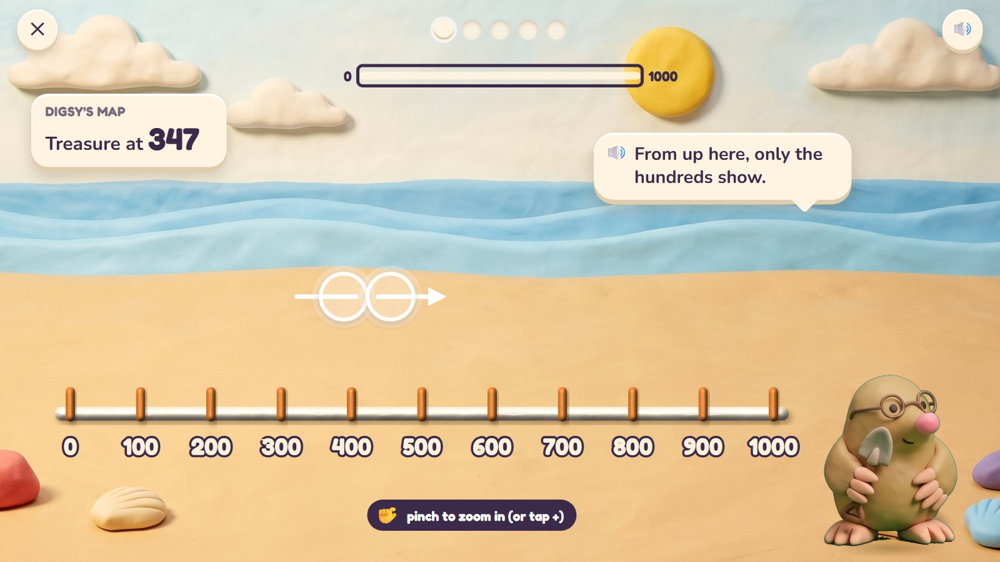
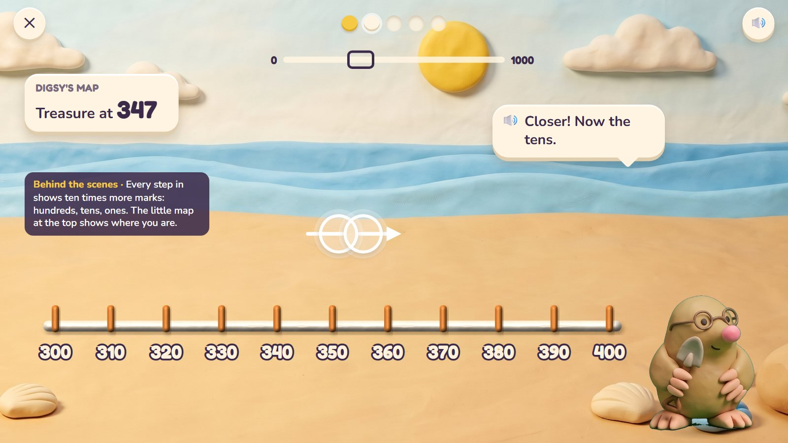
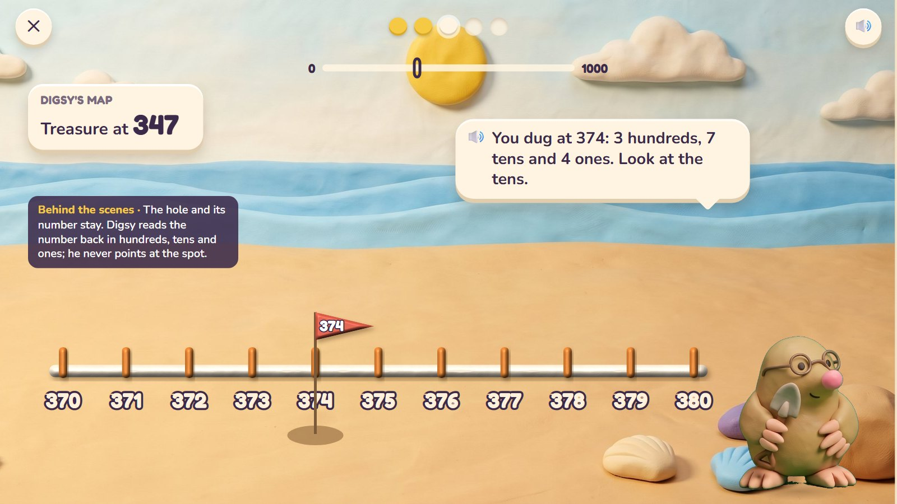
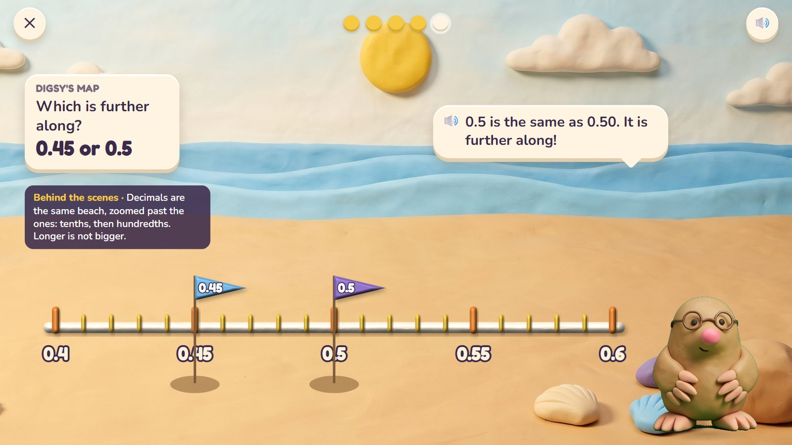
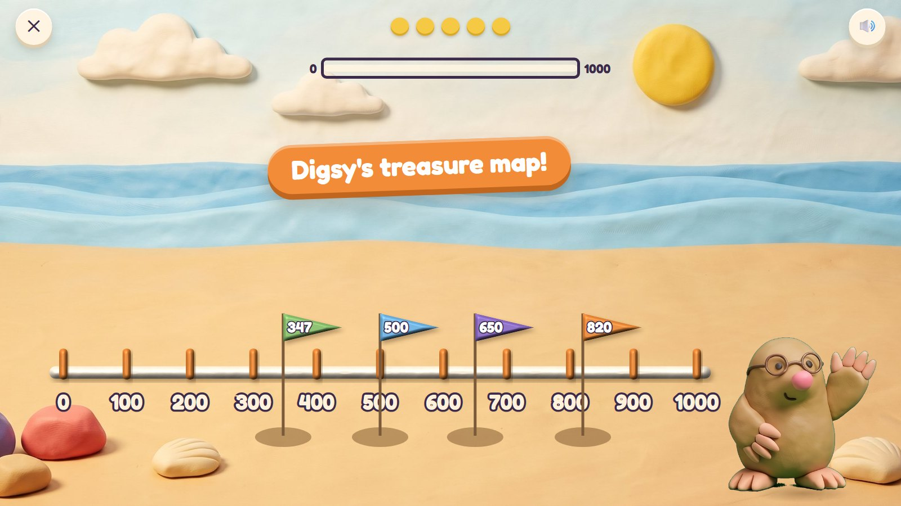

Zoom Dig
Digsy's beach is a giant number line from 0 to 1000, and treasure is buried at exact numbers. From far away only the hundreds show. Pinch to zoom in and the tens appear, then the ones, then (for older diggers) tenths and hundredths. The child zooms to the right spot and taps to dig. Zooming in and out is place value: every step in shows ten times more marks.
Grades 3–5 · ages 8–10 host: Digsy move: pinch to zoom, drag, tap to dig
The maths: Place numbers on a number line to 1000 (then 10 000); halfway; rounding to 10 and 100; tenths and hundredths; comparing decimals. One activity is five rounds, about two minutes. With one finger: + and − buttons, arrows to slide.
🎉 The fun
Zooming into the sand; digging up a chest; the final zoom out with every flag.
🎥 The view
Zooms and slides: pinch to zoom, drag to slide; a little map at the top keeps the child oriented.
🎆 The finale
Zoom all the way out: every treasure found sits on Digsy's map with its flag (3 seconds), and the chests open together.
Six moments

1From far away
Digsy's map says the treasure is at 347. From far away the beach shows only the hundreds. The child pinches to zoom in.
🔊 From up here, only the hundreds show.
The little map at the top shows which part of the beach is in view.

2Closer
Between 300 and 400 the tens appear: 310, 320 … The child zooms in again, between 340 and 350.
🔊 Closer! Now the tens.
Every step in shows ten times more marks: hundreds, then tens, then ones.

3A wrong try
The child dug at 374: an empty hole with a flag. Digsy reads the number back.
🔊 You dug at 374: 3 hundreds, 7 tens and 4 ones. Look at the tens.
The hole and its number stay. Digsy reads the number back; he never points at the spot.

4Found it
Between 340 and 350 the ones show. The child digs at 347 and the chest comes up.
🔊 347! Three hundreds, four tens, seven ones.

5Smaller than one
Ages 9–10: zooming past the ones shows tenths, then hundredths. Which is further along, 0.45 or 0.5?
🔊 0.5 is the same as 0.50. It is further along!
The same beach, zoomed further. A longer number is not always a bigger one.

6Digsy's treasure map
Zoomed all the way out: every treasure the child found has its flag.
🔊 Digsy's treasure map!
Mock-ups: Gemini's clay pictures (scenes, friends, props) with the maths drawn by code in the same clay look, the way the app would draw it, so every count and size is exact.
What is asked, for one age
- Dig at 347
- Halfway between 600 and 700 (650)
- The hundred nearest to 482 (500)
- Dig at 2.7
- 0.45 or 0.5: which is further along?
One activity card. The same activity serves other ages with other numbers:
| Age | What changes |
|---|---|
| 8 | 0 to 100, then 0 to 1000; hundreds, tens and ones; rounding to the nearest 10. |
| 9 | To 1000 and 10 000; halfway; rounding to 10 and 100; tenths. |
| 10 | Hundredths; comparing decimals; rounding decimals. |
Wrong answers we expect, and what happens
| Mistake | Looks like | What happens (never red, never "wrong") |
|---|---|---|
| Digits swapped | 374 for 347 | the hole stays; Digsy reads 374 back in hundreds, tens and ones |
| Miscounting marks at a new zoom | 345 for 347 | each zoom labels its marks: "Count on from 340." |
| Rounding the wrong way | 400 for 482 | zoom out: is 482 nearer 400 or 500? |
| Longer is bigger | 0.45 further than 0.5 | zoom in to hundredths: 0.5 = 0.50 |
What it needs
- The wide beach, one picture
- The number line, marks, flags and holes drawn by code (exact)
- The chest and spade (cut-outs)
- Digsy in three poses
- Voice: numbers to 10 000, decimals, tips
Test robot: Reads the target, zooms to the level that shows its last digit, taps the exact spot and checks the dig landed within half a mark. Once it digs at the swapped digits.
One question
← Back to Clay Bay · Poke Pals · Pull-a-Shape · Critter Maker · Seesaw Twins · Parade Squares · Fair Slices · Zoom Dig